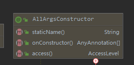

实 验 报 告
学院：计算机科学学院 专业： 2020年10月27日
姓 名 | 学 号 | |||||||||||||||||||||||||||||
班 级 | 指导老师 | 祁江源 | ||||||||||||||||||||||||||||
课程名称 | Java综合训练（实验报告） | 成 绩 | ||||||||||||||||||||||||||||
实验名称 | 基于Java Web的系统开发 | |||||||||||||||||||||||||||||
1．实验目的 （1）进一步熟悉Java基础语法 （2）进一步掌握Java Web项目的创建与环境的搭建 （3）学会用数据库的基础增删改查 （4）进一步理解开发流程和相关开发规范，养成良好的职业基础 | ||||||||||||||||||||||||||||||
2．实验内容 （1）完成基于Java Web的教务系统的主页界面设计和代码编写 （2）利用教务系统实现对程序中数据的保存和修改 （3）实现登录、注册功能 （4）实现教务系统信息的添加，包含姓名、班级、年龄、学号等数据、 （5）实现教务系统信息的修改，提供修改页面，完成信息的修改 （6）实现教务系统信息的删除，根据id删除用户信息 （7）实现教务系统信息的查询，根据相关函数实现教务系统信息的查询操作 | ||||||||||||||||||||||||||||||
3．实验环境 Jdk 1.8 Eclipse mars Windows 10 专业版 | ||||||||||||||||||||||||||||||
4．实验方法和步骤（含设计和代码） ER图设计：
数据库设计：
UML图：  考虑到开发效率，使用到了mybatis数据库框架，MyBatis将配置文件中的每一个<mapper> 节点抽象为一个Mapper接口，而这个接口中声明的方法和跟<mapper> 节点中的<select|update|delete|insert> 节点项对应，即<select|update|delete|insert> 节点的id值为Mapper接口中的方法名称，parameterType 值表示Mapper对应方法的入参类型，而resultMap 值则对应了Mapper接口表示的返回值类型或者返回结果集的元素类型 编写dao层接口： import java.util.List; @Mapper public interface UserDao { /** * 通过ID查询单条数据 * * @param uid 主键 * @return 实例对象 */ User queryById(Integer uid); /** * 查询指定行数据 * * @param offset 查询起始位置 * @param limit 查询条数 * @return 对象列表 */ List<User> queryAllByLimit(@Param("offset") int offset, @Param("limit") int limit); /** * 通过实体作为筛选条件查询 * * @param user 实例对象 * @return 对象列表 */ List<User> queryAll(User user); /** * 新增数据 * * @param user 实例对象 * @return 影响行数 */ int insert(User user); /** * 修改数据 * * @param user 实例对象 * @return 影响行数 */ int update(User user); /** * 通过主键删除数据 * * @param uid 主键 * @return 影响行数 */ int deleteById(Integer uid); } 编写xml文件： <?xml version="1.0" encoding="UTF-8"?> <!DOCTYPE mapper PUBLIC "-//mybatis.org//DTD Mapper 3.0//EN" "http://mybatis.org/dtd/mybatis-3-mapper.dtd"> <mapper namespace="com.garen.loginsys.mapper.UserDao"> <resultMap id="BaseResultMap" type="com.garen.loginsys.entity.User"> <!--@Table user--> <result property="uid" column="uid" jdbcType="INTEGER"/> <result property="username" column="username" jdbcType="VARCHAR"/> <result property="upassword" column="upassword" jdbcType="VARCHAR"/> <result property="uname" column="uname" jdbcType="VARCHAR"/> <result property="uscore" column="uscore" jdbcType="DOUBLE"/> </resultMap> <!--查询单个--> <select id="queryById" resultMap="BaseResultMap"> select uid, username, upassword, uname, uscore from loginsys.user where uid = #{uid} </select> <!--查询指定行数据--> <select id="queryAllByLimit" resultMap="BaseResultMap"> select uid, username, upassword, uname, uscore from loginsys.user limit #{offset}, #{limit} </select> <!--通过实体作为筛选条件查询--> <select id="queryAll" resultMap="BaseResultMap"> select uid, username, upassword, uname, uscore from loginsys.user <where> <if test="uid != null"> and uid = #{uid} </if> <if test="username != null and username != ''"> and username = #{username} </if> <if test="upassword != null and upassword != ''"> and upassword = #{upassword} </if> <if test="uname != null and uname != ''"> and uname = #{uname} </if> <if test="uscore != null and uscore != 0"> and uscore = #{uscore} </if> </where> </select> <!--新增所有列--> <insert id="insert" keyProperty="uid" useGeneratedKeys="true"> insert into loginsys.user(username, upassword, uname, uscore) values (#{username}, #{upassword}, #{uname}, #{uscore}) </insert> <!--通过主键修改数据--> <update id="update"> update loginsys.user <set> <if test="username != null and username != ''"> username = #{username}, </if> <if test="upassword != null and upassword != ''"> upassword = #{upassword}, </if> <if test="uname != null and uname != ''"> uname = #{uname}, </if> <if test="uscore != null"> uscore = #{uscore}, </if> </set> where uid = #{uid} </update> <!--通过主键删除--> <delete id="deleteById"> delete from loginsys.user where uid = #{uid} </delete> </mapper> 最后在接口层调用mybatis类提供的方法即可 package com.garen.loginsys.controller; import com.garen.loginsys.entity.User; import com.garen.loginsys.mapper.UserDao; import org.springframework.beans.factory.annotation.Autowired; import org.springframework.stereotype.Controller; import org.springframework.web.bind.annotation.RequestMapping; import org.springframework.web.bind.annotation.ResponseBody; import javax.servlet.http.HttpServletRequest; import javax.servlet.http.HttpSession; import java.util.ArrayList; import java.util.List; @Controller public class UserController { @SuppressWarnings("SpringJavaInjectionPointsAutowiringInspection") @Autowired private UserDao userDao; @RequestMapping("getAllUser") @ResponseBody public ArrayList<User> getAllUser(){ return (ArrayList<User>) userDao.queryAll(new User()); } @RequestMapping("login") @ResponseBody public boolean login(String username,String password,HttpServletRequest req){ List<User> users = userDao.queryAll(new User(null, username, null, null, 0)); if(users.size()!=0){ if(users.get(0).getUpassword().equals(password)){ req.getSession().setAttribute("now",users.get(0)); return true; }else{ return false; } }else{ return false; } } @RequestMapping("getUserByUsername") @ResponseBody public User getUserByUsername(String username){ User user = new User(); user.setUsername(username); List<User> users = userDao.queryAll(user); if(users.size() == 0){ return null; }else{ return users.get(0); } } @RequestMapping("insertUser") @ResponseBody public boolean insertUser(User user){ return userDao.insert(user) > 0; } @RequestMapping("deleteByUid") @ResponseBody public boolean deleteByUid(int uid){ return userDao.deleteById(uid) > 0; } @RequestMapping("getLoging") @ResponseBody public User getLoging(HttpServletRequest request){ HttpSession session = request.getSession(); User now = (User) session.getAttribute("now"); return now; } } 5．程序运行结果 注册用户
用户登录 | ||||||||||||||||||||||||||||||
6．实验分析与体会 总结一下学习j2ee的心得体会 1. java数据库连接(JDBC)。——JDBC定义了4种不同的驱动：1.JDBC-ODBC桥,2.JDBC-native驱动桥3,JDBC-network桥4.纯java驱动。 2. Java命名和目录接口(JNDI)（它是为了对高级网络应用开发中的使用的目录基础结构的访问。）。 3. 企业Java Beans(Enterprise Java Beans,EJB)（它提供了一个架构来开发和配置到客户端的分布式商业逻辑，因此可以明显减少开发扩展性、高度复杂企业应用的难度。）。 4. JavaServer Pages(JSPs)。 5. Java servlets（servlets提供的功能大部分与JSP相同，JSP中大部分是HTML代码，其中只有少量的Java代码，而servlets则相反，它完全使用Java编写，并且产生HTML代码。）。 6. Java IDL/CORBA（用得不多）。 7. Java 事务体系(JTA)/Java事务服务(JTS)（用得不多）。 8. JavaMail和JavaBenas激活架构(JavaBeans Activation Framework,JAF)。（JavaMail是一个用来访问邮件服务的API）。 9. Java信使服务(Java Messaging Service,JMS)（JMS是一个用来和面向信息的中层通信的API）。 10. 扩展标记语言(Extensible Markup Language,XML)。 实验日期 ： 2020 年 10 月 27 日 | ||||||||||||||||||||||||||||||
教师评语 签名： 年 月 日 | ||||||||||||||||||||||||||||||